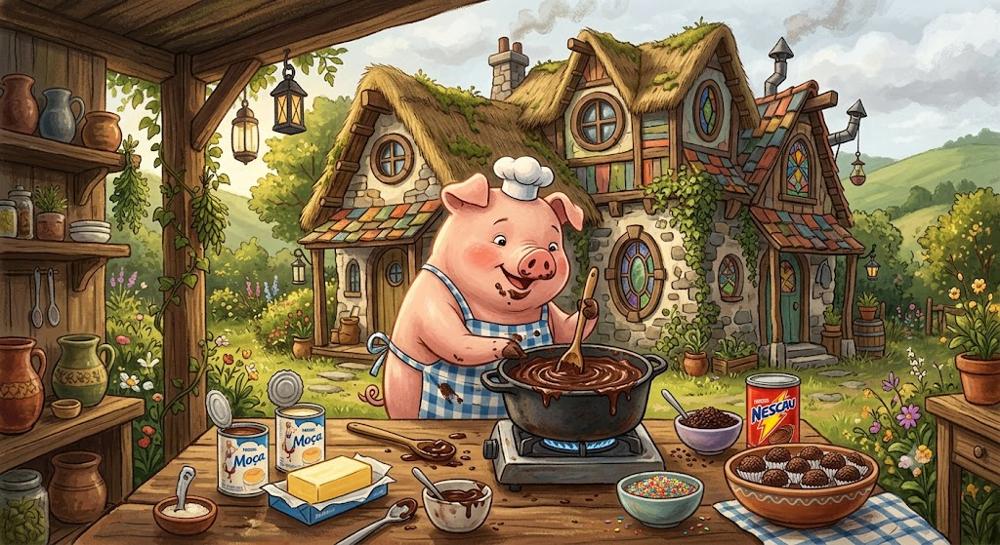

Brigadeiro Tradicional
Por: Gabrielly Vitória
Boas-vindas ao meu blog! Hoje vou ensinar como fazer um delicioso brigadeiro fácil e rápido.
Ingredientes
- 1 lata de leite condensado (395g)
- 1 colher (sopa) de manteiga
- 3 colheres (sopa) de chocolate em pó
- Granulado a gosto
Modo de Preparo
- Cozinhe: Em uma panela, misture o leite condensado, a manteiga e o chocolate em pó. Leve ao fogo baixo, mexendo sempre, até soltar totalmente do fundo da panela.
- Esfrie: Despeje a mistura em um prato untado com manteiga e deixe esfriar por completo.
- Enrole: Unte as mãos com manteiga, faça pequenas bolinhas, passe no granulado e coloque em forminhas.